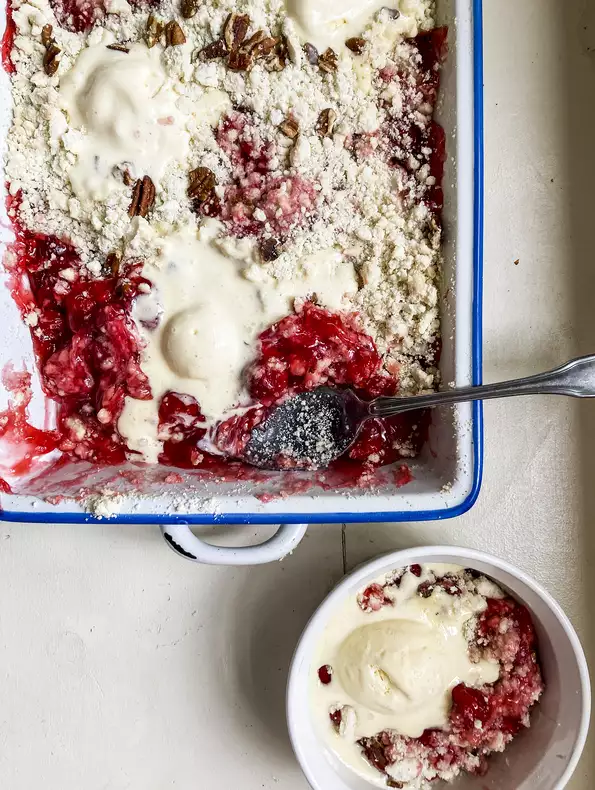

Cherry Dump Cake

Description
It is a delicious cake that you can easily make in your own kitchen. It's perfect for many occasions. Make it for your loved one's birthdays or other meaningful days. Everyone will love it. This brings you back to your childhood as this is a recipe that probably your mum would make. It is effortless to make, nice, easy and perfectly sweet.
Pro-tip: Accompany with unsweetened whipped cream or least sweet vanilla ice cream make it even more delicious!
Ingredients
- 2 (21 ounce) cans cherry pie filling
- 1 (15.25 ounce) package white cake mix
- ¼ cup butter, melted
- ½ cup coarsely chopped pecans
Steps
- Preheat the oven to 350 degrees F (175 degrees C).
- Spread cherry pie filling over the bottom of a 9x13-inch baking pan. Stir cake mix and butter together into a gooey, clumpy mixture. Break into pieces between your fingers and crumble evenly on top of the cherry filling. Sprinkle pecans on top.
- Bake in the preheated oven until golden brown on top, 35 to 40 minutes.